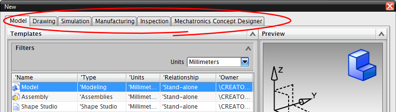

新建部件文件
在标准工具条上，点击新建  以选择新建文件的模板。
以选择新建文件的模板。
模板
模板包含预设的首选项以及数据对象，从模板创建的部件将包括模板部件中所有对象，并继承它的所有设置。
模板位于新建对话框顶部的各个选项卡上。

|
模型 |
使用这些模板以开始其中一个应用模块 |
|
图纸 |
模板将启动制图应用模块；其中一些将使用主模型方式创建装配体工程图纸 |
|
仿真 |
使用这些模板开始仿真应用模块并创建仿真文件 |
|
加工 |
模板将帮助用户创建 CAM 设置、通用设置或是仅生成一个毛坯 |
|
检测 |
使用这些模板新建检测部件，“检测”应用模块用来为坐标检测仪(Coordinate Measuring Machines，CMMs)定义完整的、可验证的仪器检测程序。 |
|
机电概念设计 |
使用这些模板新建机电部件，“机电概念设计”应用模块用于定义机械、电气、软件以及电气互联产品。 |
NX 将根据用户默认设置为各种类型的新建部件生成一个默认名称和位置，如果您不想使用默认名称和位置，可以在使用部件前更改它们，或者在第一次保存部件时更改。
当您从模板创建部件时，NX 将根据选择的模板启动合适的应用模块。
|
注释 |
要创建自己的模板，参加 NX 8 帮助以获取更多信息 |